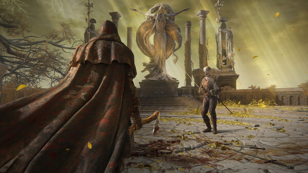
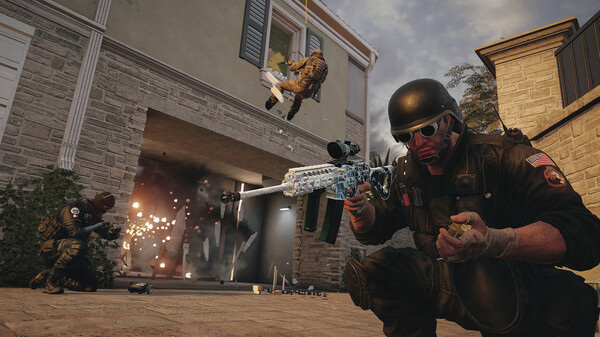
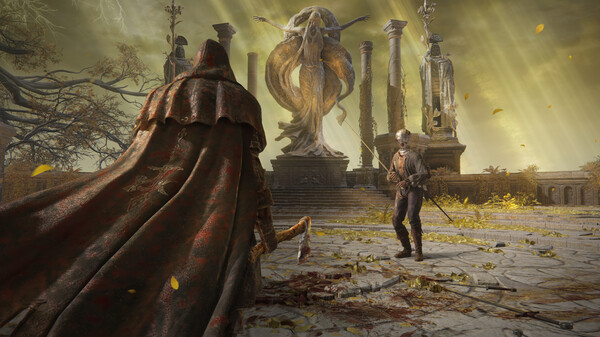
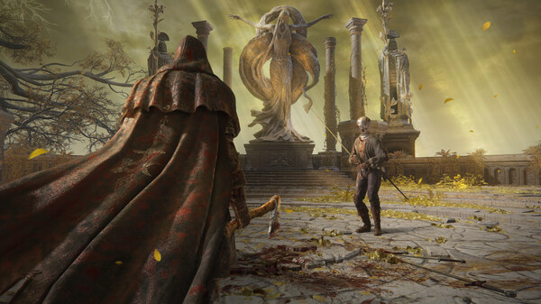
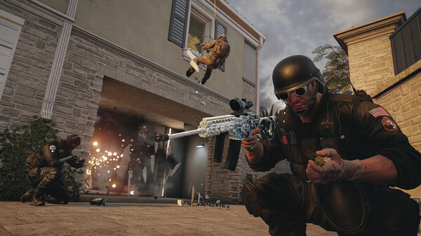
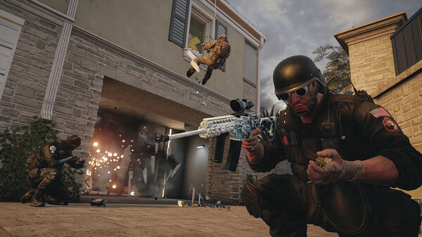

EEN NIEUW WONDERBAARLIJK AVONTUUR STAAT JE TE WACHTEN. Verrijs, Bezoedelden, en laat je leiden door genade om de kracht van de Elden Ring te gebruiken en een Elden Lord in The Lands Between te worden.
Een immens grote wereld waarin open velden met uiteenlopende taferelen en enorme dungeons met complexe en driedimensionale ontwerpen naadloos met elkaar zijn verbonden. Terwijl je de wereld verkent, ervaar je de pret van het ontdekken van onbekende en overweldigende gevaren, met als gevolg een groot gevoel van voldoening.
Rating: *****
Single player
Online PvP
Genre: Action RPG
Ontwikkelaar: FromSoftware
Uitgavedatum: Winter 2021

Systeemeisen
Besturingssysteem: Windows 10
Processor: INTEL CORE I5-8400 or AMD RYZEN 3 3300X
"Elden Ring is a massive iteration on what FromSoftware began with the Souls series, bringing its relentlessly challenging combat to an incredible open world that gives us the freedom to choose our own path." - IGN
"Elden Ring is a superb take on the soulslike genre, an astonishing evolution and a decisive step forward for From Software's scale of ambition. Elden Ring is a dream come true for every fan of Miyazaki's works." - SpazioGames
"FromSoftware returns with all of its traditional offerings in Elden Ring, but the real star of the show is its exceptional open world." - GamerBolt
Counter-Strike: Global Offensive
Counter-Strike: Global Offensive (CS:GO) ligt in het verlengde van de baanbrekende, op teams gebaseerde actiegameplay die CS 19 jaar geleden lanceerde.
CS:GO bevat nieuwe maps, personages, wapens en spelmodi, en biedt geüpdatete versies aan van klassieke CS-inhoud (de_dust2, etc.).
Rating: *****
Multiplayer
Online PvP
Genre: FPS Shooter
Ontwikkelaar: Valve
Uitgavedatum: 21 aug 2012
Systeemeisen
Besturingssysteem: Windows® 7/Vista/XP
Processor: Intel® Core™ 2 Duo E6600 of AMD Phenom™ X3 8750
Geheugen: 2 GB RAM
Grafische kaart: Videokaart moet 256 MB zijn of meer en compatibel met DirectX 9, met ondersteuning voor Pixel Shader 3.0
DirectX: Versie 9.0c
Opslagruimte: 15 GB beschikbare ruimte
Recensies
"Modern shooters do their job well, but Counter-Strike is the series that helped build the scene. At $15, Global Offensive is a great extension to that legacy." - Joystic
"At the end, what matters is not if CS:GO is innovative or more of the same than CS: Source, what counts is if it's fun. And CS:GO couldn't be better in this regard." - Eurogamer spain
"CS: GO stands as a glowing reminder that quality game design is rewarded in longevity and variety. Valve has not only updated the shooter but has completely outclassed its contemporaries. This is Counter-Strike, whatever the format you choose to play it on, and there isn't a higher recommendation than that." - Games(tm)
Rainbow Six Siege
Tom Clancy's Rainbow Six Siege is het nieuwste deel in de veelgeprezen first-person shooter franchise ontwikkeld door de gerenommeerde Ubisoft Montreal studio.
Rating: *****
Multiplayer
Online PvP
Genre: FPS Shooter
Ontwikkelaar: Ubisoft
Uitgavedatum: 1 dec 2015

Systeemeisen
Besturingssysteem: Windows 8.1, Windows 10 (64bit versions required)
Processor: Intel Core i3 560 @ 3.3 GHz or AMD Phenom II X4 945 @ 3.0 GHz
Geheugen: 6 GB RAM
Grafische kaart: NVIDIA GeForce GTX 460 or AMD Radeon HD 5870 (DirectX-11 compliant with 1GB of VRAM)
Opslagruimte: 61 GB beschikbare ruimte
Recensies
"Rainbow Six Siege is an accessible and deeply satisfying shooter that rewards planning and teamwork over a quick trigger finger." - PCGamer
"Multiplayer is the key word for this game, because you will gain nothing from Siege if you are looking for a single player experience." - COGconnected
"My time with Siege leaves me feeling like this Rainbow Six revival is a skeleton with not a lot of meat on its bones." - IGN

 



 
